Pressões potenciais de genes de resistência e microplásticos
2. Base comum e entradas específicas
| Componente | Uso na avaliação | Decisão desta versão |
|---|
| População Censo 2022 | Indicador de atividade doméstica e urbanização | Densidade no índice MP e na base ARG; sensibilidade retira população do MP. |
| Destino do esgoto Censo 2022 | Conexão domiciliar e possível via de aporte de efluentes | ARG preserva percentual anterior; MP usa densidade de domicílios sem conexão geral/pluvial. |
| Destino do lixo Censo 2022 | Pressão de manejo domiciliar inadequado | MP usa domicílios sem coleta por km²; mapa nativo mostra percentual por setor. |
| Vias cadastradas | Contexto urbano e superfície potencialmente geradora de partículas | MP usa km de via/km²; não há tráfego, desgaste ou carga de partículas observada. |
| Uso do solo 2025 | Urbanização, cobertura e contexto de escoamento | Permanece como camada comum complementar; não duplica população/vias no índice MP. |
| Relevo, declividade e hidrografia | Conectividade topográfica candidata | Fora do índice gerador; utilizados na leitura de caminhos D8. |
| Internações e estabelecimentos | Atividade assistencial local | Somente ARG; internação não é prevalência de resistência nem origem residencial. |
| Licenciamento e instalações de resíduos | Triagem de atividades e alternativas documentadas de gestão | Camadas específicas MP; sem peso enquanto cobertura municipal e operação não forem verificadas. |
A literatura sustenta a investigação de escoamento urbano e efluentes como rotas de microplásticos, incluindo superfícies viárias e atividades domésticas. Lindfors et al. (2025) compararam superfícies urbanas, enquanto Imbulana, Tanaka e Oluwoye (2024) distinguiram escoamento e efluentes em uma bacia urbana. Esses estudos fundamentam a escolha dos mecanismos a investigar. Seus coeficientes e participações não foram transferidos para as bacias mineiras.
3. Bases obtidas e como foram tratadas
3.1 Destino do lixo no Censo 2022
Foi utilizado o mesmo arquivo CSV da pasta saneamento_ibge, com o código do setor e as variáveis V00397 a V00402. V00397 representa coleta no domicílio pelo serviço de limpeza e V00398, depósito em caçamba desse serviço. V00399 a V00402 representam queima, enterramento, descarte em terreno/encosta/área pública e outros destinos. O denominador é o total de domicílios particulares permanentes ocupados, preservado da base censitária anterior.
As contagens originais permanecem referidas ao setor inteiro, embora a geometria da camada seja o recorte pela bacia. ORIG_KM2 informa a área original e PART_KM2 informa o recorte. Para estimar a parcela dentro da bacia, a contagem é multiplicada pela razão entre a área recortada e a área original. Trata-se de alocação proporcional, com distribuição homogênea assumida dentro do setor. Não é uma contagem observada das casas localizadas no recorte.
O marcador X significa sigilo. Ele não foi convertido em zero. Quando a soma conhecida das duas formas de coleta permite obter o total combinado sem coleta, utiliza-se o complemento do denominador, sem reconstruir cada categoria sigilosa. Nos demais casos, o limite inferior soma as categorias não coletadas conhecidas e o superior é o total menos as categorias coletadas conhecidas. O ponto médio representa uma hipótese central explícita. Os limites seguem para o teste de sensibilidade. Registros inexistentes, denominadores incompatíveis e setores sem domicílios não recebem um percentual artificial.
| Bacia | Domicílios alocados à bacia (estimativa) | Sem coleta: intervalo agregado |
|---|
| Ibirité / REGAP | 60.254 | 0,475–0,534% |
| Pampulha | 166.565 | 0,499–0,517% |
| Vargem das Flores | 54.989 | 0,844–0,919% |
Os totais acima são agregados uma única vez pelos recortes dos setores. Não foram somados os círculos de 500 m, pois eles se sobrepõem. O percentual global baixo pode coexistir com bolsões locais sem coleta. Também não significa que todo domicílio coletado tenha destinação final ambientalmente adequada, nem que toda ausência de coleta gere microplásticos.
Household waste collection deficit · Census 2022
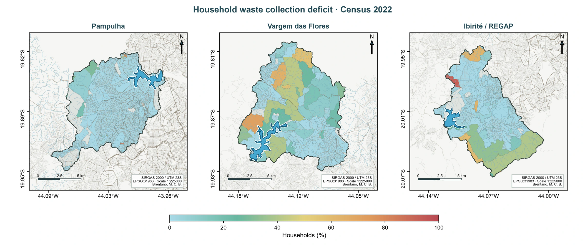
Percentual domiciliar sem coleta por serviço de limpeza, com geometria nativa dos setores. As contagens se referem ao setor inteiro; o recorte não localiza cada domicílio.Waste collection deficit · uncertainty from confidential counts
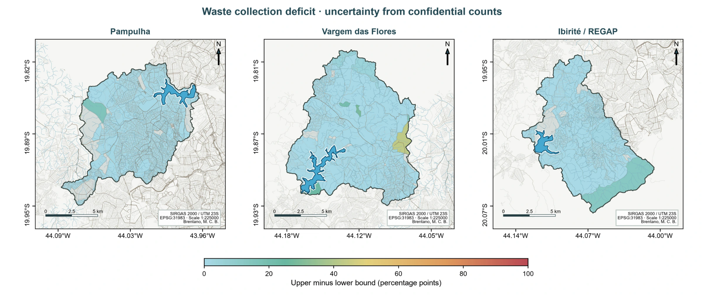
Diferença, em pontos percentuais, entre os limites superior e inferior do percentual sem coleta. Mostra a amplitude decorrente do sigilo ou da incompletude das categorias; não é um intervalo de confiança.Uncollected household waste · predominant reported destination
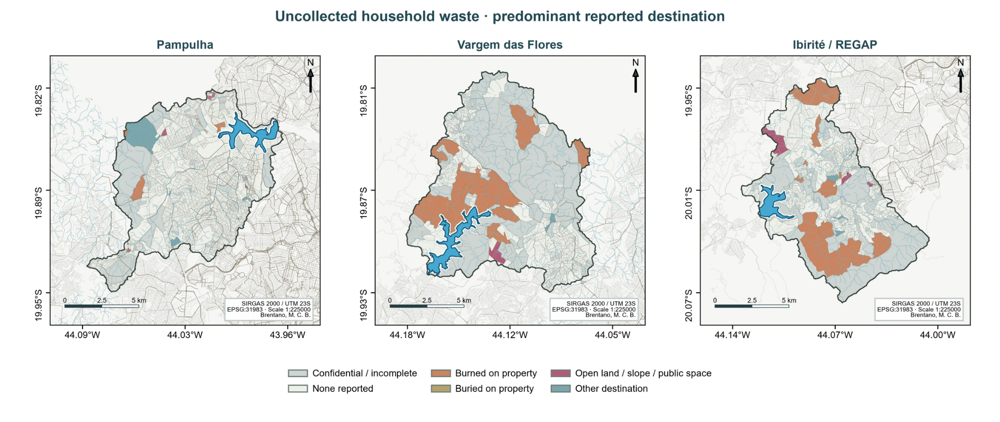
Destino mais frequente entre as quatro categorias sem coleta quando todas são conhecidas. Registros sigilosos/incompletos ficam separados. O mapa não informa quantidade de plástico e não substitui a conexão hidrológica com o reservatório.3.2 IDE-Sisema, licenças e instalações
A consulta WFS da IDE-Sisema utilizou EPSG:31983 e o envelope das três bacias acrescido de 20 km para contexto regional. Foram obtidas licenças SLA, cadastro histórico estadual 2013–2019, aterros sanitários, transbordo, disposição precária, planos municipais e competência municipal de licenciamento. URLs, arquivos, data e SHA-256 constam no manifesto de downloads. Os registros com CPF e nomes de pessoas permanecem apenas nos originais locais. As camadas derivadas usam identificadores genéricos, processo e atividade.
Há 49 registros de processos dentro das bacias, não necessariamente 49 estabelecimentos diferentes. A triagem encontrou 2 descrições diretamente relacionadas a plásticos: moldagem de termoplástico e reciclagem a seco, ambas no cadastro histórico. Elas são pistas para leitura do processo. Não confirmam atividade atual, lançamento ou quantidade emitida. O cadastro SLA tem apenas oito registros internos e o histórico, 41; a cobertura não inclui necessariamente os processos municipais ou atividades secundárias.
As instalações de resíduos são apresentadas como contexto de gestão. O recorte regional contém 7 registros de aterro/transbordo, dos quais 1 intersecta as bacias. A ausência de um ponto de lixão na consulta não comprova inexistência de descarte clandestino. Uma instalação regularizada não recebe automaticamente um valor de pressão ou de mitigação: são necessários situação operacional, resíduos aceitos, capacidade e destino real dos resíduos gerados na bacia.
As tipologias abaixo representam atividades principais dos 49 registros de processo, e não necessariamente 49 empresas distintas ou em operação. O cadastro estadual precisa ser complementado por processos municipais. O vínculo potencial não foi transformado em peso ou taxa de emissão.
| TP_NAME |
Registros |
| Plastic processing / recycling |
2 |
| Refining / chemical industry |
7 |
| Metal / vehicle manufacturing |
6 |
| Waste / wastewater treatment |
5 |
| Fuel handling / transport |
19 |
| Other activities / infrastructure |
10 |
Licensed activity records · source-related typologies
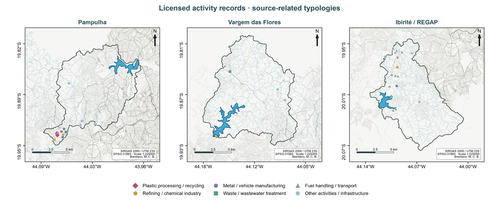
Registros estaduais de licenciamento agrupados pela atividade principal. A família de plásticos inclui os dois registros históricos de moldagem e reciclagem a seco. As demais famílias orientam a leitura dos processos e não têm emissões de microplásticos quantificadas.Licensed activities · documentary link to microplastics
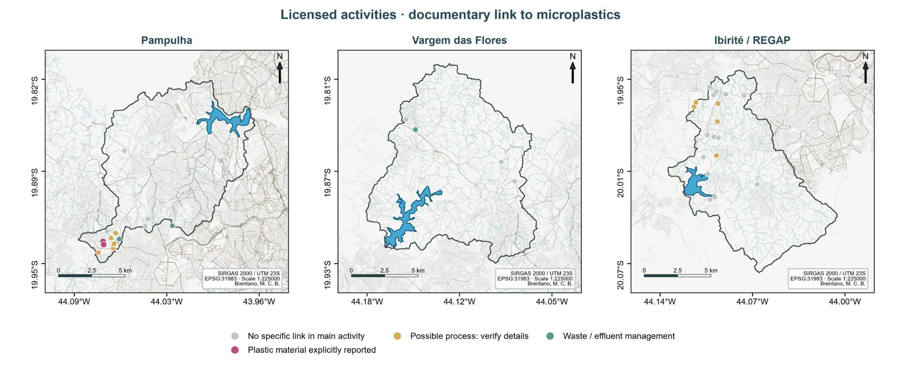
O vínculo é documental: material plástico explícito, processo possível a verificar, manejo de resíduos/efluentes ou ausência de vínculo específico na descrição. As cores não representam níveis medidos de geração ou de risco.Solid-waste destination and registered facilities
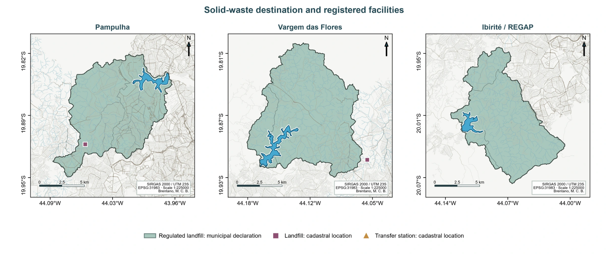
Todos os municípios do recorte declararam destinação a aterro sanitário regularizado na base de 2024. Os símbolos mostram instalações cadastradas visíveis no enquadramento. Não há atribuição automática do resíduo de um município a uma instalação nem traçado de transporte inferido.3.3 SINIR e informação municipal
Foram baixados os relatórios públicos SINIR de 2024 e 2025. A versão de exercício 2025 informa ano de referência 2024. O recorte técnico inclui diagnóstico, passivos e soluções compartilhadas dos municípios encontrados no recorte territorial; a presença varia entre módulos. Nesta extração foram encontrados registros de Belo Horizonte, Contagem, IBIRITÉ. Um município sem registro na exportação não recebeu valor zero. Os arquivos municipais têm linhas repetidas por meta e composição, portanto não se deve somar a massa por todas as linhas como se cada linha fosse uma coleta independente.
O cadastro estadual de planos de 2024 complementa a leitura municipal. Existência de plano e de coleta seletiva não equivale a cobertura percentual ou desempenho. Esses atributos administrativos não foram replicados como medições independentes em cada célula de 500 m.
Selective collection · municipal declaration, 2024
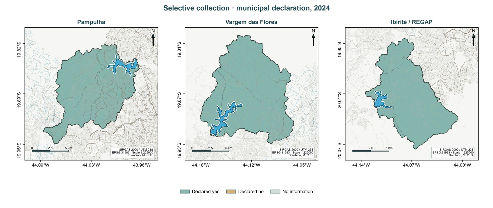
Existência de coleta seletiva declarada em escala municipal em 2024. A presença do serviço não indica cobertura de todos os bairros nem percentual de recuperação de materiais.Municipal solid-waste management plan · 2024
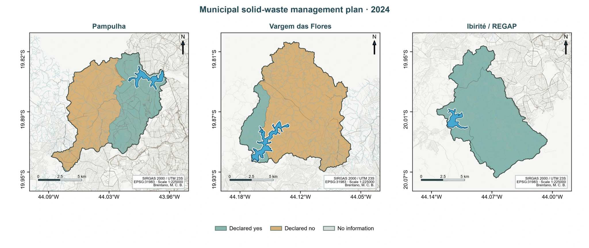
Existência declarada de plano municipal de gestão de resíduos em 2024. O mapa não avalia implementação, fiscalização ou eficácia do plano.4. Como funciona a classificação de microplásticos
4.1 Suporte espacial e elegibilidade
Os círculos de raio 500 m são as vizinhanças de cálculo já utilizadas no projeto. Cada círculo é recortado pela bacia. Os resultados são exibidos em hexágonos sem sobreposição, que não são a área usada no denominador. A chave é GRID_ID junto com BACIA, porque um centro pode originar dois fragmentos em bacias diferentes.
Das 598 unidades bacia/vizinhança, 588 foram elegíveis. As seis lacunas da avaliação anterior permanecem. Quatro unidades adicionais não têm domicílios no suporte censitário utilizado, de modo que o percentual de coleta não pode ser calculado. Essas dez unidades permanecem identificadas como informação insuficiente. Não foi criada continuidade artificial por interpolação; a água continua representada como reservatório.
4.2 Critérios, normalização e pesos
O cenário S0 usa quatro critérios: densidade populacional; densidade de domicílios sem conexão à rede geral/pluvial; densidade de domicílios sem coleta; densidade de vias cadastradas. As duas densidades domiciliares evitam que uma área quase desabitada se destaque apenas por apresentar um alto percentual de déficit. O esgotamento conserva as hipóteses de lacunas da base anterior. Ausência de conexão não demonstra ausência de tratamento individual.
Aplica-se log1p a cada densidade e, depois, min-max com os extremos do conjunto elegível das três bacias. Os mesmos extremos são usados em todos os cenários. Essa transformação reduz a influência de caudas longas e preserva a ordem, mas não transforma as entradas em taxas de emissão equivalentes. O índice é I = 100 × soma(wj × zj) / soma(wj), com zj entre zero e um. Em S0, todos os pesos valem um.
As classes fixas são muito baixa (0–20), baixa (>20–40), moderada (>40–60), alta (>60–80) e muito alta (>80–100). São faixas exploratórias, não limites legais ou sanitários. O mapa em quintis é mantido como leitura relativa separada: até P20, >P20–P40, >P40–P60, >P60–P80 e >P80. Quintis podem separar regiões pouco diferentes e não demonstram uma ruptura física no transporte.
4.3 Cenários e estabilidade
S1 triplica o peso de domicílios sem coleta, S2 triplica vias, S3 triplica domicílios sem rede e S4 retira população. S4 testa parte da redundância entre adensamento e infraestrutura. A matriz de correlação de Spearman acompanha os resultados. Os critérios não são estatisticamente independentes, e a correlação deve ser discutida como limitação do índice composto.
| Cenário | Pesos: pop/rede/lixo/vias | Melhor K | Silhouette | ARI com S0 (K fixo) | Rho do índice |
|---|
| S0 | [1, 1, 1, 1] | 2 | 0,441 | 1,000 | 1,000 |
| S1 | [1, 1, 3, 1] | 2 | 0,397 | 0,946 | 0,971 |
| S2 | [1, 1, 1, 3] | 2 | 0,463 | 0,683 | 0,952 |
| S3 | [1, 3, 1, 1] | 2 | 0,427 | 0,666 | 0,963 |
| S4 | [0, 1, 1, 1] | 3 | 0,381 | 0,688 | 0,967 |
A concordância de perfis no mapa é a proporção dos cinco cenários que preserva o grupo de S0 após alinhar os rótulos. Ela inclui o próprio S0, portanto não pode ser lida como probabilidade e não será menor que 20%. O ARI compara partições como um todo, corrigindo parte da concordância ao acaso. A correlação de Spearman compara a ordenação dos índices, e pode continuar alta mesmo quando algumas fronteiras dos grupos mudam. Os limites inferior e superior do lixo também foram propagados ao índice, com os extremos centrais fixos e truncamento no intervalo normalizado. Esse intervalo representa apenas a incerteza associada ao sigilo do lixo.
4.4 K-means: o que os perfis significam
O k-means recebe as quatro entradas normalizadas, e não apenas o índice médio. As colunas são multiplicadas pela raiz quadrada dos pesos normalizados, de modo que a distância euclidiana quadrática reflita os pesos. Foram testados K=2 a K=6, com 20 inicializações por combinação e semente fixa. A implementação usa scipy.cluster.vq.kmeans2 por meio da função fitkm já existente no projeto.
O cenário de pesos iguais selecionou K=2 pela maior silhouette entre os K testados, com valor 0,441. Esse resultado indica separação interna moderada dos perfis neste conjunto. Não é um p-valor e não valida a ocorrência de microplásticos. O K é mantido igual ao de S0 na comparação entre cenários, mesmo quando um cenário tem outro K preferido. Um peso não é considerado correto apenas por produzir silhouette maior.
| Perfil | Unidades | Pop./km² | Sem rede/km² | Sem coleta/km² | Vias km/km² | Índice mediano |
|---|
| 1 | 265 | 25,4 | 4,2 | 0,97 | 1,45 | 25,2 |
| 2 | 323 | 3.571,9 | 42,0 | 1,63 | 10,22 | 54,0 |
Os números acima são medianas das entradas, não cargas físicas. O perfil 1 agrupa, em geral, vizinhanças menos adensadas e com menor densidade viária. O perfil 2 apresenta maior adensamento e infraestrutura viária. Nenhum dos dois deve ser chamado de fonte comprovada ou região contaminada. As classes do índice fornecem intensidade relativa; os perfis do k-means descrevem combinações de variáveis, e por isso as duas saídas não são intercambiáveis.
4.5 Moran: associação espacial e não transporte
O Moran global e local foi calculado separadamente em cada bacia. A matriz espacial conecta os oito centros elegíveis mais próximos, é simetrizada e padronizada por linha. O Moran utiliza o índice MP_INDEX; o k-means utiliza a matriz de quatro entradas. Foram feitas 999 permutações, com pseudo-p bilateral. No teste local foi aplicada correção Benjamini-Hochberg a 5% dentro de cada bacia e tema.
| Bacia | Unidades elegíveis | Moran I | Pseudo-p global |
|---|
| Ibirité / REGAP | 176 | 0,665 | 0,001 |
| Pampulha | 180 | 0,548 | 0,001 |
| Vargem das Flores | 232 | 0,572 | 0,001 |
HH significa índice acima da média da bacia cercado por vizinhança também alta; LL representa associação baixa-baixa. HL e LH são contrastes locais. NS indica que o teste não permaneceu significativo após correção, e não ausência de pressão. ND representa falta de entrada. Como os círculos de 500 m se sobrepõem, parte da continuidade pode decorrer do próprio suporte de cálculo. A significância é exploratória e não deve ser apresentada como evidência independente do processo hidrológico. O teste não descobre sozinho o caminho de uma partícula.
5. Rotas candidatas até o reservatório
A direção D8 vem dos rasters hidrológicos já existentes. Cada pixel envia o fluxo para um dos oito vizinhos. Nesta etapa, rasteriza-se o índice de cada hexágono sobre a grade de 30 m, soma-se índice × área terrestre contribuinte e divide-se pela área válida acumulada a montante. A água não gera pressão e interrompe a trajetória. Os arquivos contributing_km2 e upstream_pressure são distintos: o primeiro informa área válida conectada; o segundo, a média ponderada do índice nessa área.
O D8 organiza caminhos topográficos candidatos. Não inclui galeria pluvial, rede de esgoto, canalização subterrânea, retenção por vegetação, sorção, ressuspensão, chuva, vazão ou transporte de polímeros. A malha viária é uma fonte potencial e referência urbana; ela não foi queimada no MDE para forçar escoamento. Os caminhos não são probabilidades calibradas. Para decidir quais vias realmente drenam para um curso d'água, o próximo dado mais útil é a localização de bocas de lobo, galerias e lançamentos pluviais.
As três execuções foram verificadas quanto a pixels finitos e ciclos no grafo D8. A ausência de ciclos garante a consistência do processamento topológico, mas não valida a delimitação hidrológica contra observações de campo. Os índices anteriores de ARG foram preservados sem alterações; a conexão topográfica de MP utiliza seu próprio índice.
6. O que obter a seguir, sem ampliar excessivamente o modelo
| Prioridade | Informação | Como obter e tratar |
|---|
| 1 | Licenças municipais de atividades plásticas, borracha, têxteis e lavanderias | Consultar PBH e o SILO de Contagem; solicitar aos demais municípios planilha de processos com atividade, situação, endereço/coordenada e validade. Geocodificar só quando não houver coordenada e informar precisão. Ler pareceres antes de converter ponto em critério. |
| 1 | Descarte irregular e limpeza urbana | Solicitar ao serviço municipal pontos georreferenciados e datas de vistorias, remoção de resíduos, material e recorrência. Não usar denúncia isolada como carga. |
| 1 | Drenagem e lançamentos pluviais | Solicitar bocas de lobo, galerias, canais e exutórios; conectar as rotas ao sistema real, mantendo alternativa D8. |
| 2 | Destino real dos resíduos e unidades de triagem | Cruzar plano/SINIR com contratos e situação operacional de aterros, cooperativas e triagem. Usar como contexto de gestão, sem descontar automaticamente o índice local. |
| 2 | Tráfego das vias principais | Obter contagens oficiais ou hierarquia auditada; substituir a densidade geométrica somente se houver cobertura comparável. |
| 2 | Resultados amostrais do estudo | Relacionar ponto, data, método, tamanho detectável e tipo de polímero às hipóteses espaciais. Não calibrar e validar nos mesmos poucos pontos sem teste independente. |
Para o licenciamento estadual, abrir a IDE-Sisema e habilitar licenças SLA e histórico. Consultar o processo no acesso visitante do SLA ou no SIAM e conferir atividades secundárias, drenagem, resíduos e destinação. Para BH, o licenciamento ambiental deve ser distinguido do urbanístico. Para Contagem, o SILO oferece consulta de processos e licenças emitidas. Quando não houver exportação aberta, solicitar à secretaria municipal um recorte das oito municipalidades que intersectam as bacias: Belo Horizonte, Betim, Brumadinho, Contagem, Ibirité, Sarzedo, Ribeirão das Neves e Esmeraldas. A busca não deve se limitar aos municípios que dão nome aos reservatórios.
O pacote não adiciona medicamentos vendidos, doenças ou estabelecimentos de saúde ao índice de MP. Também não adiciona todas as categorias de uso do solo como novos critérios. A proposta permanece com quatro critérios e camadas auxiliares, reduzindo redundância e a aparência de precisão de um modelo com muitos pesos ainda não calibrados.
7. Arquivos e reprodução
Os originais baixados estão em dados_publicos/residuos_licenciamento/originais; o manifesto está na pasta imediatamente superior. As entradas tratadas ficam em entrega_final/01_entradas/18_residuos e 19_licenciamento. O resultado MP fica em entrega_final/02_saidas/06_microplasticos; cada pasta de camada contém um único shapefile e campos.csv. Os testes S0–S4 têm suas próprias pastas. Rasters, tabelas, dicionários, auditoria e mapas triplos são entregues separadamente. O relatório complementa, sem substituir, o relatório ARG anterior.
Os scripts novos têm configuração inicial de entradas, campos e saídas e aceitam TECO_PROJECT_ROOT ou codigo/caminhos_projeto.json. Config/microplasticos.json define critérios, transformações e pesos. Adicionar uma variável exige também programar sua agregação por círculo e auditar unidade, cobertura e direção de influência. Inserir um arquivo no diretório não basta para incorporá-lo ao índice.
8. Referências e fontes para consulta
• IBGE. Censo Demográfico 2022, agregados por setores, características dos domicílios e dicionário disponibilizados na pasta saneamento_ibge. https://www.ibge.gov.br/estatisticas/sociais/populacao/22827-censo-demografico-2022.html?edicao=41852&t=downloads
• IDE-Sisema. Serviços geográficos e metadados das camadas consultadas em 16/11/2026. https://geoportal.meioambiente.mg.gov.br/webservices
• MMA. Sistema Nacional de Informações sobre a Gestão dos Resíduos Sólidos, SINIR. Catálogo e exportações públicas, exercício 2025, referência 2024. https://dados.mma.gov.br/dataset/sinir
• Lindfors, S. et al. (2025). Microplastics and tyre wear particles in urban runoff from different urban surfaces. Science of the Total Environment, 980, 179527. https://doi.org/10.1016/j.scitotenv.2025.179527
• Imbulana, S.; Tanaka, S.; Oluwoye, I. (2024). Quantifying annual microplastic emissions of an urban catchment: Surface runoff vs wastewater sources. Journal of Environmental Management, 360, 121123. https://doi.org/10.1016/j.jenvman.2024.121123
• Swedish Environmental Protection Agency (2023). Urban Plastics, Report 7104. Rotas e gestão de partículas plásticas urbanas. https://www.naturvardsverket.se/4ace1d/globalassets/media/publikationer-pdf/7100/978-91-620-7104-2.pdf
• OECD/JRC (2008). Handbook on Constructing Composite Indicators. Discussão de normalização, pesos, redundância e sensibilidade. https://doi.org/10.1787/9789264043466-en
• Anselin, L. (1995). Local Indicators of Spatial Association - LISA. Geographical Analysis, 27, 93–115. https://doi.org/10.1111/j.1538-4632.1995.tb00338.x
• Rousseeuw, P. J. (1987). Silhouettes: a graphical aid to the interpretation and validation of cluster analysis. Journal of Computational and Applied Mathematics, 20, 53–65. https://doi.org/10.1016/0377-0427(87)90125-7
• PBH. Licenciamento ambiental. https://prefeitura.pbh.gov.br/meio-ambiente/licenciamento-ambiental
• Contagem. Sistema de Licenciamento Online, SILO. https://alvaras.contagem.mg.gov.br/
Mapas da classificação e produtos complementares
Mapped road density · 500 m neighbourhoods
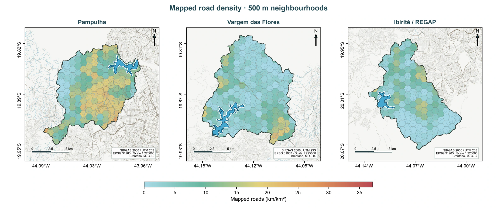
ARG-related anthropogenic pressure · preserved baseline
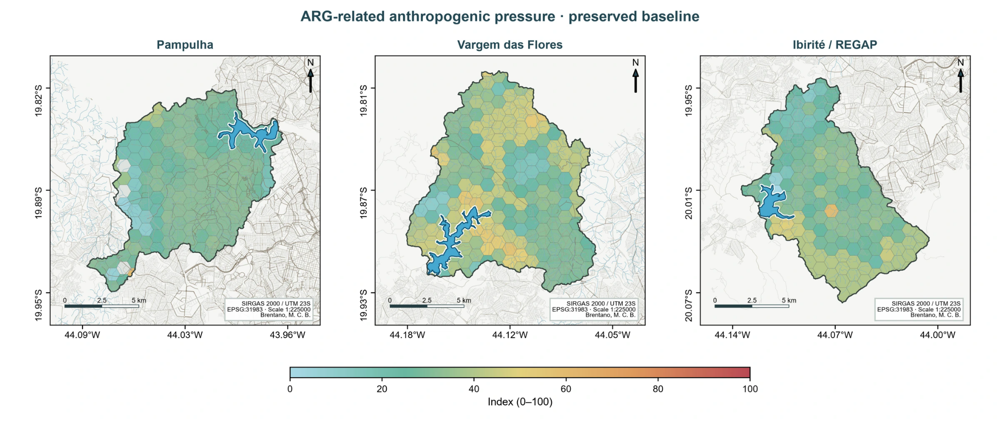
Exploratory microplastic source pressure · equal weights
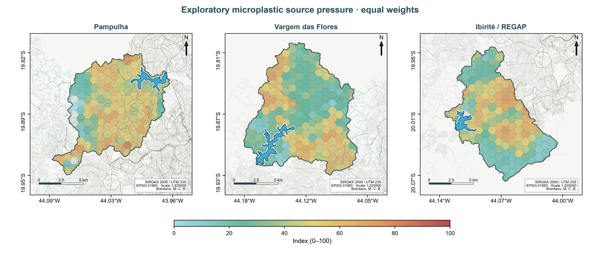
Microplastic source pressure · fixed score classes
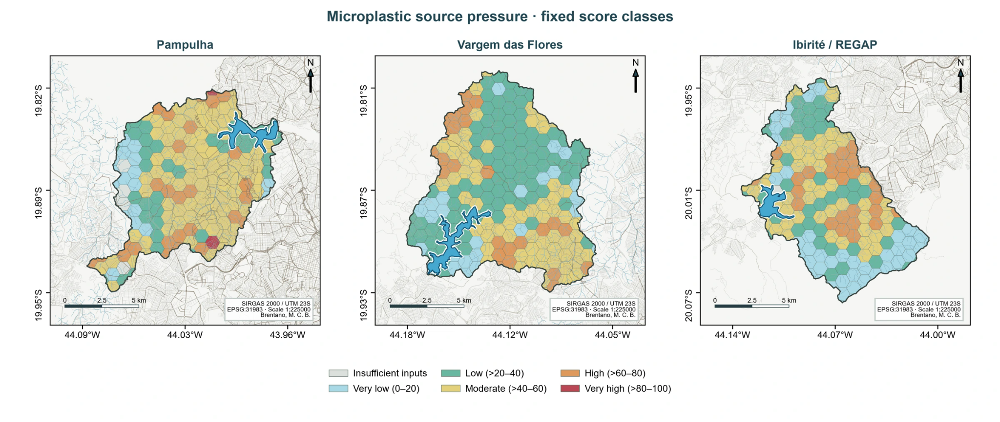
Microplastic source pressure · relative quintiles
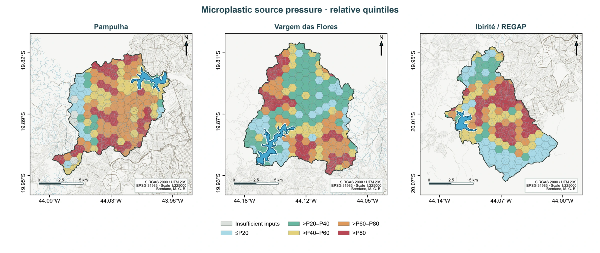
Microplastic source profiles · k-means K=2
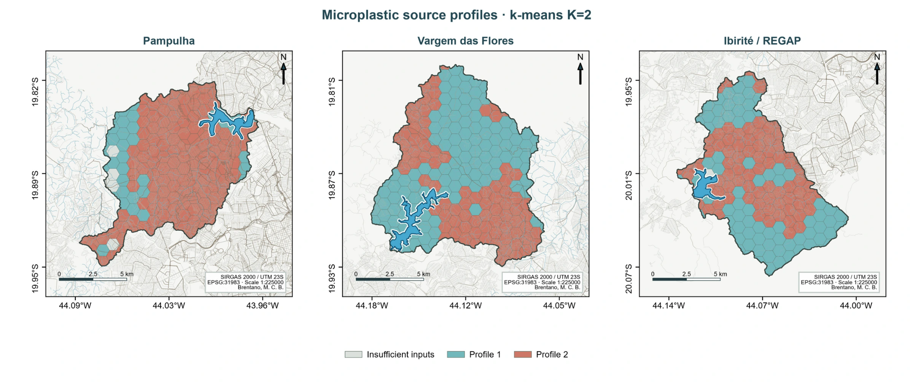
Microplastic profiles · sensitivity to weighting
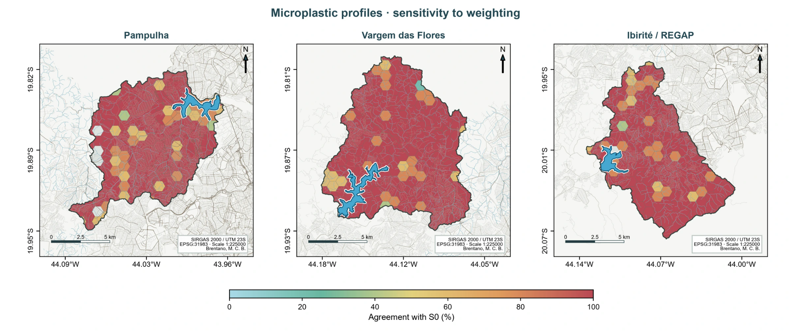
Microplastic source pressure · local Moran (FDR 5%)
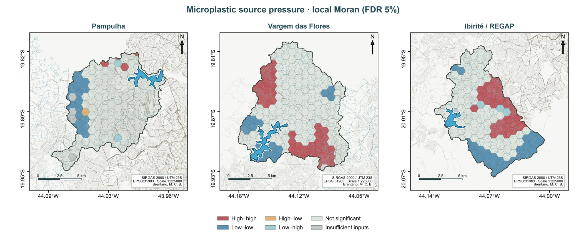
Documented licensing and solid-waste management · screening
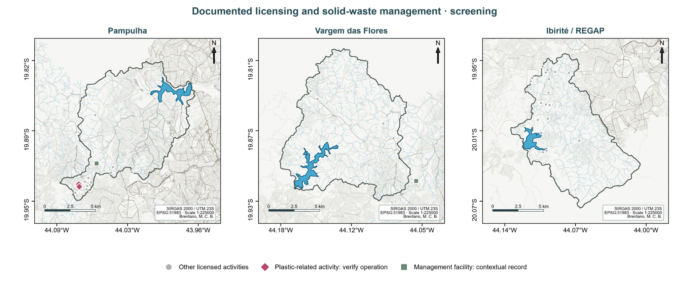
Microplastic pressure · topographic upstream mean
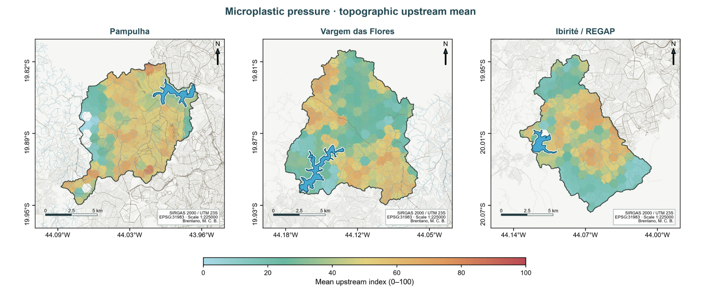
Uncollected household waste · estimated source density
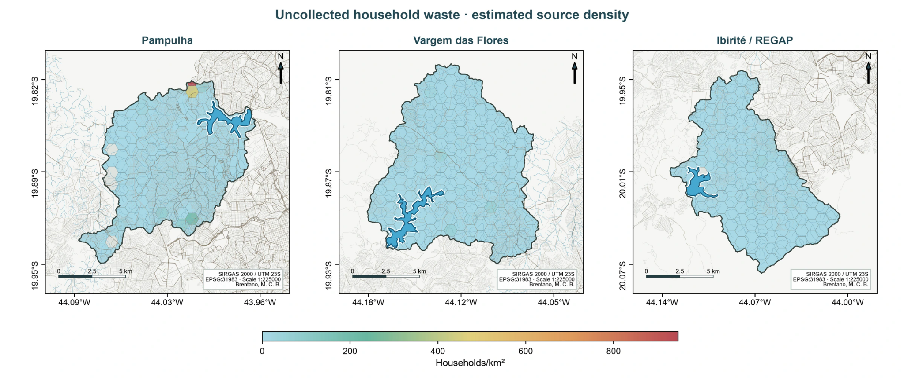
Households without general sewer connection · estimated density
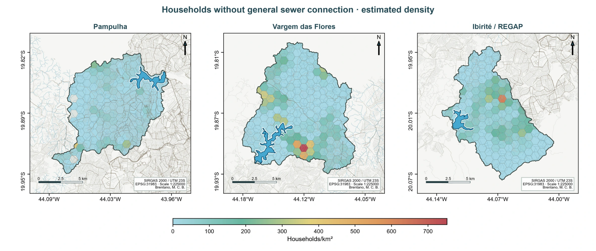